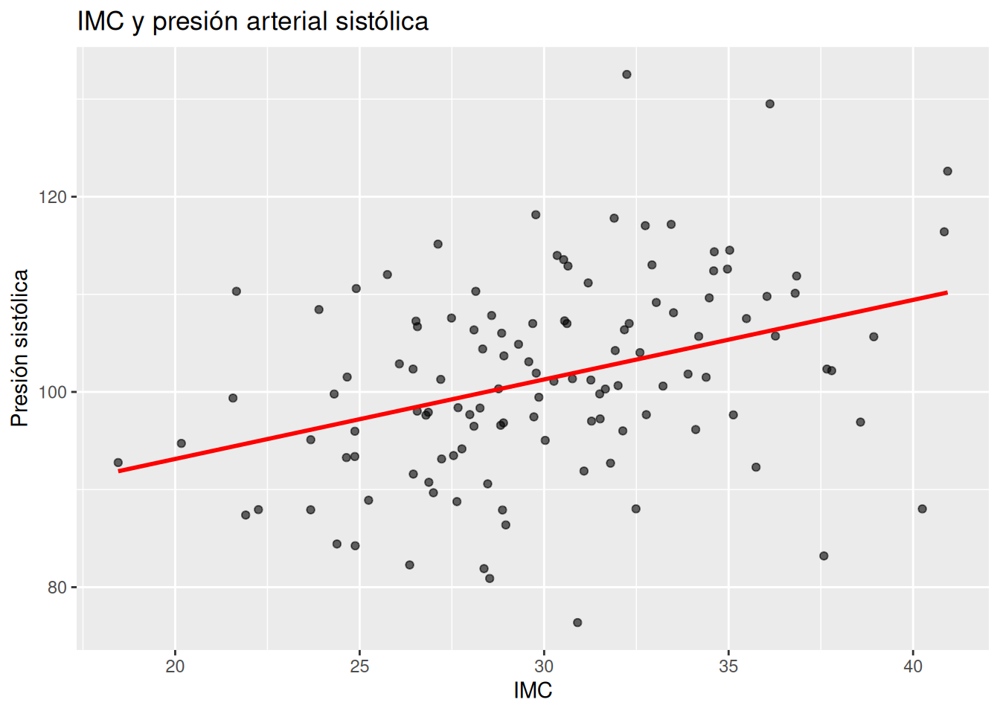
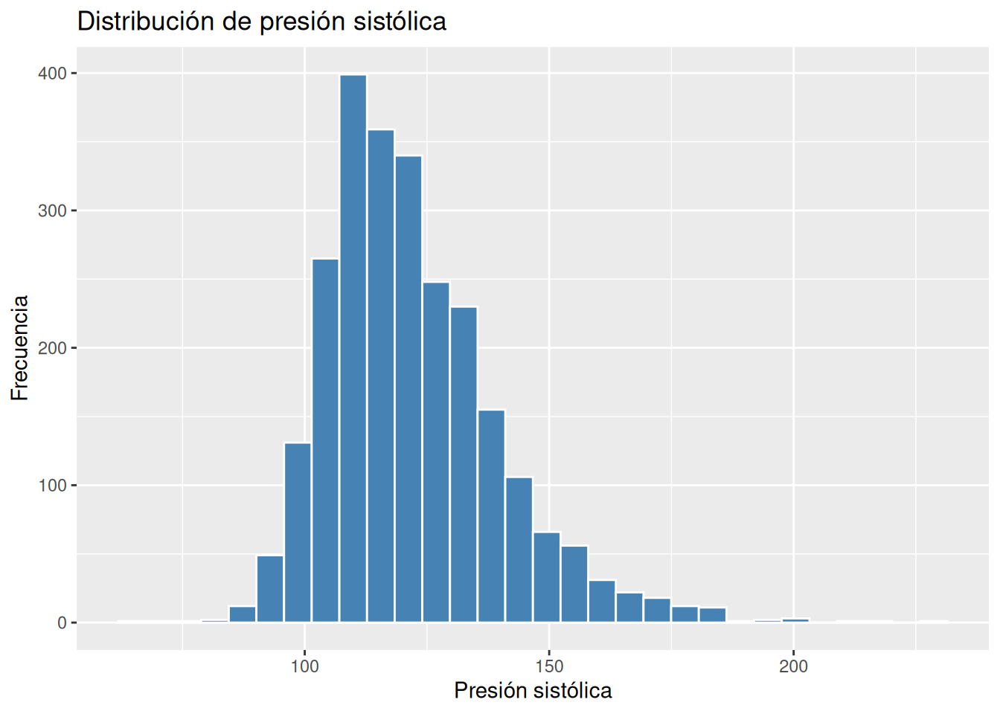
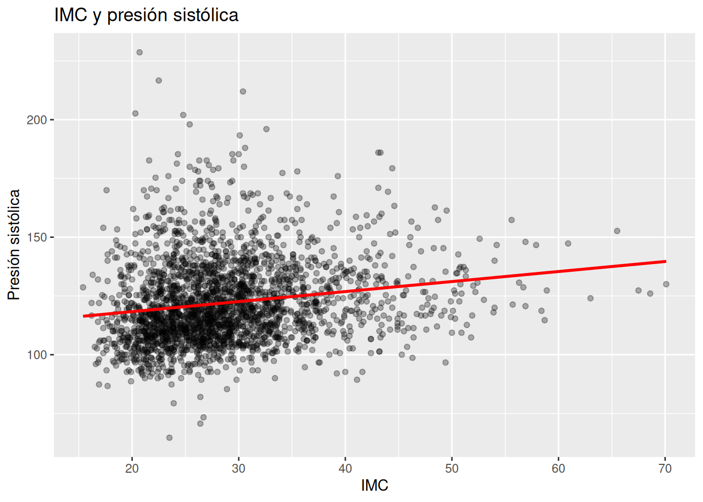
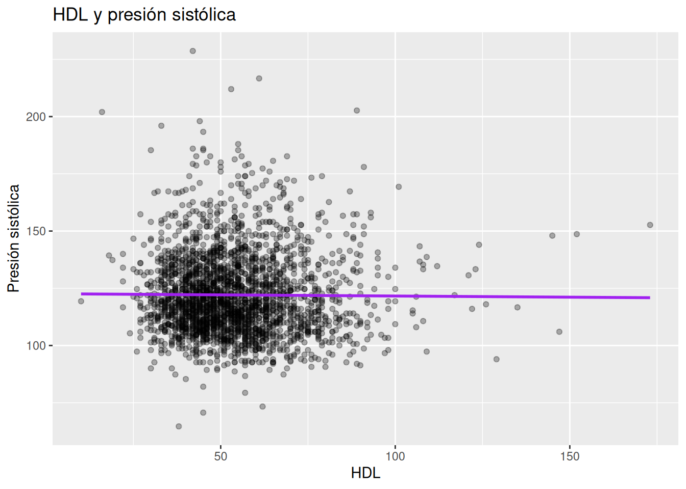
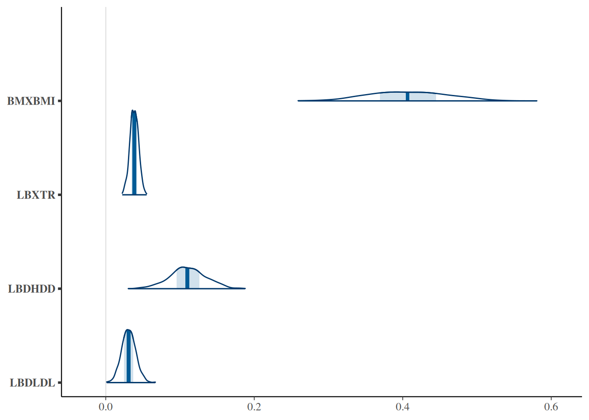

set.seed(123)
# Crear 120 paciente
n <- 120
# Simular la presión sistólica basados en imc, triglicéridos y hdl
# también simulados
datos_sim <- tibble(
imc = rnorm(n, 30, 5),
trigliceridos = rnorm(n, 170, 40),
hdl = rnorm(n, 45, 10)
) |>
mutate(
presion_sistolica =
90 +
0.7 * imc +
0.05 * trigliceridos -
0.4 * hdl +
rnorm(n, 0, 8)
)16.- Riesgo cardiovascular
Introducción
Cuando pensamos en riesgo cardiovascular, es común imaginar una sola causa:
- “el colesterol alto”
- “la presión elevada”
- “la obesidad”
- “la diabetes”
Pero en la práctica clínica, el riesgo cardiovascular rara vez nace de un único problema aislado.
Una persona con obesidad abdominal puede presentar:
- triglicéridos elevados
- HDL bajo
- hipertensión
- resistencia a la insulina
- inflamación crónica
Y todos esos procesos suelen aparecer juntos.
La medicina moderna ha descubierto algo importante:
el sistema cardiovascular funciona como una red interconectada
No tratamos números aislados.
Tratamos sistemas biológicos completos.
1. Intuición
El riesgo cardiovascular como un sistema
Imagina dos pacientes.
Paciente A
- IMC normal
- triglicéridos normales
- HDL adecuado
- presión arterial normal
Paciente B
- obesidad abdominal
- triglicéridos altos
- HDL bajo
- presión arterial elevada
Aunque ambos pacientes puedan “sentirse bien”, clínicamente sabemos que el segundo tiene un entorno metabólico muy distinto.
No porque exista una única variable peligrosa.
Sino porque múltiples factores comienzan a empujar en la misma dirección fisiopatológica.
¿Por qué ocurre esto?
La obesidad visceral suele asociarse con:
- resistencia a la insulina
- hiperinsulinemia
- inflamación crónica
- alteración del metabolismo lipídico
- activación simpática
- daño endotelial
Todo esto puede favorecer:
- aumento de triglicéridos
- descenso del HDL
- elevación de presión arterial
Por eso muchos factores cardiovasculares “viajan juntos”.
Una idea fundamental
👉 El riesgo cardiovascular es multifactorial.
No existe una única causa dominante.
Existen múltiples procesos contribuyendo simultáneamente.
Y justamente ahí es donde los modelos bayesianos se vuelven útiles.
Porque permiten:
- integrar varias variables
- cuantificar incertidumbre
- estimar contribuciones relativas
- pensar en rangos plausibles
- De relaciones aisladas a modelos integrados
En capítulos anteriores analizamos relaciones simples:
- IMC y glicemia
- insulina y obesidad
- inflamación y metabolismo
Ahora daremos un paso importante:
👉 integrar múltiples variables en un mismo modelo.
Esto se parece mucho más a la medicina real.
Porque los pacientes reales no vienen con una sola alteración.
Outcome principal del capítulo
En este capítulo usaremos como resultado principal:
Presión arterial sistólica
Porque clínicamente:
- es relevante
- se relaciona con obesidad
- se asocia con riesgo vascular
- responde a múltiples procesos metabólicos
Y la modelaremos usando:
- IMC
- triglicéridos
- HDL
como predictores.
2. Ejemplo simple (simulación)
Antes de usar NHANES, construiremos una simulación pequeña.
La idea será crear pacientes ficticios donde:
- mayor IMC
- mayores triglicéridos
- menor HDL
se asocien con mayor presión arterial.
Simulación de datos
Visualización inicial
# Visualización inicial
ggplot(datos_sim,
aes(imc, presion_sistolica)) +
geom_point(alpha = 0.6) +
geom_smooth(method = "lm",
se = FALSE,
color = "red") +
labs(
title = "IMC y presión arterial sistólica",
x = "IMC",
y = "Presión sistólica"
)
Interpretación visual
La tendencia general muestra:
👉 a mayor IMC, mayor presión arterial.
Pero también observaremos dispersión.
Eso es importante.
Porque la presión arterial no depende únicamente del IMC.
También intervienen:
- lípidos
- genética
- inflamación
- edad
- estilo de vida
- metabolismo
Modelo bayesiano simple
# Crear modelo bayesiano del efecto del imc, los triglicéridos y el
# colesterol hdl sobre la presión sistólica
modelo_sim <- stan_glm(
presion_sistolica ~ imc + trigliceridos + hdl,
data = datos_sim,
chains = 2,
iter = 1000,
seed = 123,
refresh = 0
)Resumen del modelo
# Resumen del modelo
print(modelo_sim) # produce:stan_glm
family: gaussian [identity]
formula: presion_sistolica ~ imc + trigliceridos + hdl
observations: 120
predictors: 4
------
Median MAD_SD
(Intercept) 93.9 6.7
imc 0.8 0.2
trigliceridos 0.0 0.0
hdl -0.5 0.1
Auxiliary parameter(s):
Median MAD_SD
sigma 8.1 0.5
------
* For help interpreting the printed output see ?print.stanreg
* For info on the priors used see ?prior_summary.stanregIntervalos posteriores
# Imprimir intervalo posterior
posterior_interval(modelo_sim,
prob = 0.95) # produce: 2.5% 97.5%
(Intercept) 80.70187399 106.20174312
imc 0.42759741 1.09373671
trigliceridos -0.00521481 0.07177702
hdl -0.59134876 -0.32207239
sigma 7.16626324 9.29625299¿Qué significa este modelo?
El modelo intenta responder:
“¿Cómo cambia la presión arterial cuando distintas variables metabólicas cambian simultáneamente?”
Y eso es extremadamente importante clínicamente.
Porque en medicina:
👉 casi nunca una variable cambia sola.
Interpretación conceptual
Si el modelo muestra:
- IMC positivo
- triglicéridos positivos
- HDL negativo
la interpretación clínica sería:
- mayor adiposidad → mayor presión
- peor perfil metabólico → mayor presión
- HDL protector → menor presión
Una idea bayesiana importante
Cada coeficiente tiene incertidumbre.
No existe un “valor verdadero exacto”.
Existen rangos plausibles.
Por ejemplo:
- el efecto del IMC podría ser moderado
- o algo más fuerte
- o ligeramente menor
El modelo estima una distribución de posibles efectos.
3. Ejemplo aplicado con NHANES
Hasta ahora hemos trabajado con ejemplos simples y simulados.
Ahora veremos qué ocurre cuando usamos datos reales de NHANES.
Y aquí aparece algo extremadamente importante:
👉 los datos reales casi nunca se comportan de forma perfectamente “limpia”.
Las variables metabólicas suelen:
- superponerse
- correlacionarse
- compartir mecanismos fisiopatológicos
- cambiar de significado dependiendo del contexto del modelo
Eso hace que el análisis sea mucho más interesante… y mucho más parecido a la medicina real.
Variables utilizadas
Outcome principal
Usaremos:
BPXSY_mean
→ presión arterial sistólica promedio
como marcador clínico de riesgo cardiovascular.
Predictores
Usaremos:
BMXBMI
→ IMC
LBXTR
→ triglicéridos
LBDHDD
→ HDL
LBDLDL
→ LDL
Preparación de datos
# Seleccionar presión sistólica, imc, trigliceridemia y colesterolemia
# hdl
cardio_ldl <- df_obesidad |>
select(
BPXSY_mean, # Presión sistólica
BMXBMI, # índice de masa corporal
LBXTR, # trigliceridemia
LBDHDD, # colesterolemia hdl
LBDLDL, # colesterolemia ldl
LBXSGL, # glicemia
RIDAGEYR # edad
) |>
drop_na()
# Filtrar los datos por glicemia e índice de masa corporal
cardio_ldl <- cardio_ldl %>%
filter(
BMXBMI <= 100,
LBXTR <= 1500
)Exploración inicial
glimpse(cardio_ldl)Rows: 2,524
Columns: 7
$ BPXSY_mean <dbl> 142.0000, 137.3333, 122.6667, 104.6667, 121.3333, 119.3333,…
$ BMXBMI <dbl> 28.9, 19.7, 35.7, 20.3, 22.8, 28.9, 35.9, 23.6, 38.3, 31.8,…
$ LBXTR <dbl> 51, 75, 64, 24, 14, 148, 57, 93, 87, 328, 168, 139, 312, 77…
$ LBDHDD <dbl> 60, 85, 58, 96, 53, 33, 55, 78, 56, 43, 42, 30, 49, 72, 57,…
$ LBDLDL <dbl> 56, 101, 97, 67, 75, 119, 159, 105, 78, 68, 113, 103, 89, 1…
$ LBXSGL <dbl> 183, 104, 107, 81, 89, 97, 94, 104, 105, 103, 119, 101, 84,…
$ RIDAGEYR <dbl> 72, 73, 61, 26, 33, 32, 38, 50, 57, 20, 37, 75, 43, 54, 36,…Distribución de presión arterial
# Distribución de la presión sistólica
ggplot(cardio_ldl,
aes(BPXSY_mean)) +
geom_histogram(
bins = 30,
fill = "steelblue",
color = "white"
) +
labs(
title = "Distribución de presión sistólica",
x = "Presión sistólica",
y = "Frecuencia"
)
Relaciones individuales
Antes de construir el modelo completo, exploraremos algunas relaciones simples.
IMC y presión arterial
# Diagrama de dispersión que relaciona imc con presión sistólica
ggplot(cardio_ldl,
aes(BMXBMI, BPXSY_mean)) +
geom_point(alpha = 0.3) +
geom_smooth(method = "lm",
color = "red",
se = FALSE) +
labs(
title = "IMC y presión sistólica",
x = "IMC",
y = "Presión sistólica"
)
Aquí observamos una tendencia relativamente clara:
👉 mayor IMC suele asociarse con mayor presión arterial.
Esto es consistente con:
- obesidad visceral
- hiperinsulinemia
- inflamación
- activación simpática
- retención renal de sodio
HDL y presión arterial
# Diagrama de dispersión que relaciona la presión sistólica con el
# colesterol hdl
ggplot(cardio_ldl,
aes(LBDHDD, BPXSY_mean)) +
geom_point(alpha = 0.3) +
geom_smooth(method = "lm",
color = "purple",
se = FALSE) +
labs(
title = "HDL y presión sistólica",
x = "HDL",
y = "Presión sistólica"
)
Visualmente, el HDL puede parecer tener una pendiente negativa o poco clara.
Es decir:
👉 más HDL podría asociarse con menor presión arterial.
Y clínicamente eso tendría sentido.
Porque el HDL suele asociarse con mejor salud metabólica.
Pero aquí aparece una lección MUY importante del modelado multivariable:
las relaciones pueden cambiar cuando ajustamos por otras variables.
Construcción del modelo bayesiano
# Ajustar el modelo
modelo_cardio_ldl <- stan_glm(
BPXSY_mean ~ BMXBMI + LBXTR + LBDHDD + LBDLDL,
data = cardio_ldl,
chains = 2,
iter = 1000,
seed = 123,
refresh = 0
)Resultados del modelo
# Resumen del modelo
print(modelo_cardio_ldl) # produce:stan_glm
family: gaussian [identity]
formula: BPXSY_mean ~ BMXBMI + LBXTR + LBDHDD + LBDLDL
observations: 2524
predictors: 5
------
Median MAD_SD
(Intercept) 96.8 2.6
BMXBMI 0.4 0.1
LBXTR 0.0 0.0
LBDHDD 0.1 0.0
LBDLDL 0.0 0.0
Auxiliary parameter(s):
Median MAD_SD
sigma 17.3 0.3
------
* For help interpreting the printed output see ?print.stanreg
* For info on the priors used see ?prior_summary.stanreg# Imprimir el intervalo posterior
posterior_interval(modelo_cardio_ldl,
prob = 0.95) 2.5% 97.5%
(Intercept) 91.46196086 101.81821121
BMXBMI 0.31028734 0.50631006
LBXTR 0.02686320 0.04926550
LBDHDD 0.06122590 0.15795790
LBDLDL 0.01323105 0.04999634
sigma 16.88908691 17.85420043El resultado inesperado
Aquí ocurre algo muy interesante.
El coeficiente de HDL aparece:
👉 positivo.
Es decir:
- mayor HDL
- asociado con mayor presión sistólica
al menos dentro del modelo ajustado.
Y esto puede parecer contradictorio.
Porque normalmente pensamos:
HDL alto = mejor salud cardiovascular.
¿El modelo está mal?
Probablemente no.
Y justamente aquí aparece una de las lecciones más importantes del capítulo.
Interpretación correcta del coeficiente
El modelo NO está diciendo:
“HDL alto causa hipertensión”.
Está diciendo algo mucho más específico:
“Entre personas con IMC, triglicéridos y LDL similares, aquellas con HDL ligeramente mayor tendieron a tener presión algo más alta”.
Eso es completamente distinto.
Relaciones ajustadas vs relaciones simples
Cuando hacemos un gráfico simple:
BPXSY_mean ~ LBDHDD
vemos la relación “cruda”.
Pero en el modelo multivariable:
BPXSY_mean ~ BMXBMI + LBXTR + LBDHDD + LBDLDL
cada coeficiente representa:
👉 el efecto de una variable manteniendo las otras relativamente constantes.
Y eso puede cambiar mucho la interpretación.
Variables que viajan juntas
En metabolismo, muchas variables están conectadas.
Por ejemplo:
| Variable | Relación típica |
|---|---|
| IMC ↑ | triglicéridos ↑ |
| IMC ↑ | HDL ↓ |
| triglicéridos ↑ | HDL ↓ |
Entonces el modelo intenta separar procesos que biológicamente suelen aparecer juntos.
Y eso puede generar:
- cambios de magnitud
- cambios de signo
- coeficientes difíciles de interpretar
Una idea clave: multicolinealidad
No necesitamos matemáticas avanzadas para entender esto.
La intuición es suficiente.
👉 varias variables contienen información parcialmente redundante.
Por ejemplo:
- IMC
- triglicéridos
- HDL
todos capturan parte del síndrome metabólico.
Entonces el modelo intenta responder:
“¿qué parte del riesgo corresponde específicamente a cada variable?”
Y eso no siempre es fácil.
El IMC siguió siendo el predictor más consistente
Esto fue uno de los hallazgos más interesantes.
El IMC mantuvo un efecto relativamente estable incluso después de ajustar por:
- triglicéridos
- HDL
- LDL
Eso sugiere que el IMC probablemente está capturando:
- adiposidad visceral
- hiperinsulinemia
- inflamación
- carga metabólica global
LDL tuvo un efecto pequeño
El LDL mostró una asociación positiva, pero mucho menor que el IMC.
Esto también es clínicamente razonable.
Porque:
👉 el LDL suele relacionarse más con aterosclerosis crónica que con presión arterial directamente.
Triglicéridos y metabolismo
Los triglicéridos mostraron una asociación positiva relativamente consistente.
Eso encaja bien con:
- resistencia a la insulina
- síndrome metabólico
- exceso de grasa visceral
¿Qué significa el HDL positivo?
No necesariamente que el HDL sea “malo”.
Más probablemente:
👉 el significado del HDL cambia dentro del contexto del modelo ajustado.
Esto puede ocurrir por:
- correlación entre variables
- variables omitidas
- edad
- tratamientos
- comportamiento metabólico complejo
Una lección MUY importante
En modelos multivariables:
👉 los coeficientes NO representan verdades biológicas absolutas.
Representan:
👉 asociaciones condicionadas a las demás variables del modelo.
Y eso cambia profundamente la interpretación clínica.
Visualización de incertidumbre
# Visulaización de incertidumbre
mcmc_areas(
as.matrix(modelo_cardio_ldl),
pars = c(
"BMXBMI",
"LBXTR",
"LBDHDD",
"LBDLDL"
)
)
¿Qué observamos?
Cada coeficiente tiene:
- incertidumbre
- variabilidad
- un rango plausible
No existe un único valor “verdadero”.
Eso es pensamiento bayesiano.
El sigma del modelo
Uno de los resultados más importantes fue:
sigma ≈ 17
Esto significa:
👉 todavía existe muchísima variabilidad no explicada.
Y eso es completamente esperable.
Porque la presión arterial depende también de:
- edad
- sexo
- genética
- tabaquismo
- ejercicio
- sueño
- estrés
- sodio
- función renal
- medicamentos
Una lección clínica fundamental
Este resultado es extremadamente realista.
Porque:
👉 la hipertensión no tiene una sola causa.
Es un fenómeno multifactorial.
Conexión fisiopatológica
Obesidad visceral
Puede favorecer:
- inflamación
- hiperinsulinemia
- activación simpática
- disfunción vascular
Resistencia a la insulina
Puede relacionarse con:
- triglicéridos altos
- HDL bajo
- hipertensión
- inflamación crónica
- Disfunción endotelial
Las alteraciones metabólicas pueden afectar:
- rigidez arterial
- vasodilatación
- producción de óxido nítrico
Todo esto puede aumentar presión arterial.
El modelo como herramienta clínica
El objetivo NO es encontrar:
“la variable única que explica todo”.
El objetivo es:
👉 entender cómo múltiples procesos contribuyen simultáneamente al riesgo cardiovascular.
Insight central del capítulo
👉 “El riesgo cardiovascular emerge de sistemas biológicos interconectados.”
Interpretación clínica final
Este análisis nos enseña algo extremadamente importante:
- las variables metabólicas rara vez actúan solas
- muchas veces representan distintos aspectos del mismo proceso fisiopatológico
- los coeficientes cambian dependiendo del contexto del modelo
- la incertidumbre es parte natural del análisis clínico
Y quizás la lección más importante de todas:
Los datos reales son complejos.
Y justamente por eso el pensamiento bayesiano resulta tan útil en medicina.
Ejercicios
Ejercicio 1
Explica con tus propias palabras:
¿Por qué el riesgo cardiovascular se considera multifactorial?
Intenta conectar al menos 3 de estas variables:
- obesidad
- triglicéridos
- HDL
- presión arterial
- resistencia a la insulina
- inflamación
Ejercicio 2
¿Por qué un coeficiente puede cambiar de signo cuando agregamos nuevas variables al modelo?
Por ejemplo:
- HDL negativo en un gráfico simple
- HDL positivo en un modelo ajustado
👉 Explica la intuición clínica y estadística.
Ejercicio 3
¿Cuál es la diferencia entre:
BPXSY_mean ~ LBDHDD
y:
BPXSY_mean ~ BMXBMI + LBXTR + LBDHDD
¿Qué pregunta responde cada modelo?
Ejercicio 4
Explica con tus propias palabras:
¿Qué significa “ajustar por otras variables”?
Usa un ejemplo clínico sencillo.
Ejercicio 5
Construye un gráfico entre:
LDL y presión arterial
ggplot(...)
Preguntas:
- ¿La pendiente parece positiva o negativa?
- ¿La relación parece fuerte o débil?
- ¿Existe mucha dispersión?
Ejercicio 6
Haz un gráfico entre:
- triglicéridos y HDL
Preguntas:
- ¿Qué relación observas?
- ¿Eso podría explicar parte de la multicolinealidad?
Ejercicio 7
Calcula la matriz de correlaciones:
cardio_ldl |>
select(
BMXBMI,
LBXTR,
LBDHDD,
LBDLDL,
LBXSGL
) |>
cor(use = "complete.obs") # produce: BMXBMI LBXTR LBDHDD LBDLDL LBXSGL
BMXBMI 1.00000000 0.2009435 -0.26703238 0.07801417 0.20170376
LBXTR 0.20094353 1.0000000 -0.42736382 0.17685787 0.21830317
LBDHDD -0.26703238 -0.4273638 1.00000000 -0.02641912 -0.14623262
LBDLDL 0.07801417 0.1768579 -0.02641912 1.00000000 -0.01333875
LBXSGL 0.20170376 0.2183032 -0.14623262 -0.01333875 1.00000000Preguntas:
- ¿Qué variables parecen más relacionadas?
- ¿Qué implicaciones tiene esto para el modelo?
Ejercicio 8
Construye este modelo:
modelo_1 <- stan_glm(
BPXSY_mean ~ BMXBMI,
data = cardio_ldl,
chains = 2,
iter = 1000,
refresh = 0
)Preguntas:
- ¿Cómo cambia el coeficiente de IMC comparado con el modelo completo?
- ¿El intervalo posterior se vuelve más ancho o más estrecho?
Ejercicio 9
Construye este modelo:
modelo_2 <- stan_glm(
BPXSY_mean ~ LBXTR + LBDHDD,
data = cardio_ldl,
chains = 2,
iter = 1000,
refresh = 0
)Preguntas:
- ¿HDL sigue positivo?
- ¿Triglicéridos cambian?
- ¿Qué aprendemos sobre el papel del IMC?
Ejercicio 10
Agrega edad al modelo:
modelo_edad <- stan_glm(
BPXSY_mean ~ BMXBMI +
LBXTR +
LBDHDD +
LBDLDL +
RIDAGEYR,
data = cardio_ldl,
chains = 2,
iter = 1000,
refresh = 0
)Preguntas:
- ¿Qué ocurre con HDL?
- ¿Qué ocurre con sigma?
- ¿La edad parece importante?
Ejercicio 11
Supón que un paciente presenta:
- IMC elevado
- triglicéridos altos
- HDL bajo
- presión arterial elevada
Pregunta:
👉 ¿Cómo conectarías fisiopatológicamente estas variables?
Intenta usar conceptos como:
- resistencia a la insulina
- inflamación
- disfunción endotelial
- obesidad visceral
Ejercicio 12
¿Por qué el modelo NO demuestra causalidad?
Explica usando un ejemplo clínico.
Ejercicio 13
Explica esta frase:
“Los coeficientes del modelo representan asociaciones condicionadas.”
Ejercicio 14
¿Por qué el enfoque bayesiano resulta útil en medicina real?
Intenta conectar con:
- incertidumbre
- pacientes reales
- variabilidad biológica
- decisiones clínicas
Ejercicio 15
Explica esta idea con tus propias palabras:
“No existe una única causa dominante del riesgo cardiovascular.”
Ejercicio 16
Construye este modelo:
modelo_glucosa <- stan_glm(
BPXSY_mean ~ BMXBMI +
LBXSGL +
LBXTR +
LBDHDD,
data = cardio_ldl,
chains = 2,
iter = 1000,
refresh = 0
)Preguntas:
- ¿Qué ocurre cuando agregas glicemia?
- ¿Qué variable parece más estable?
- ¿Qué cambia más?
- ¿Qué nos enseña esto sobre metabolismo?